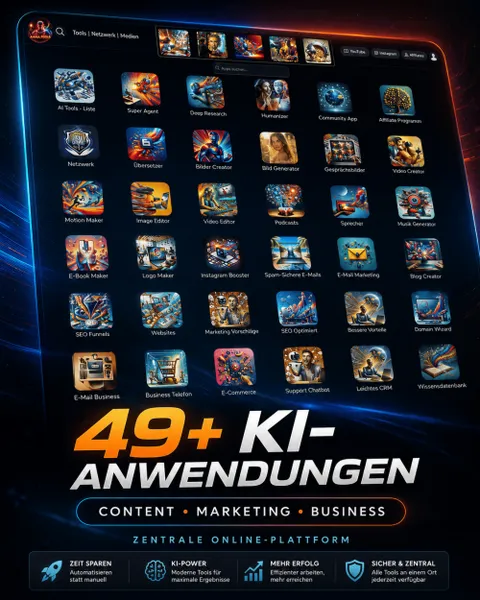

AI4ALL.tools – 49+ KI-Tools für Marketing und Business
Produktprofil · Marktplatz-Daten 2026-10-14 · Verkaufsseiten-Recherche 2026-10-14 · Kategorien: Computer & Internet, Online Marketing & E-Business, Email Marketing
- AI4ALL.tools – 49+ KI-Tools für Marketing und Business ist ein/e Mitgliederbereich & Videokurs in Computer & Internet und Online Marketing & E-Business, vertrieben über den Digistore24-Marktplatz von Anbieter janusmarketing, gelistet seit 2026-07-26.
- Listenpreis $270.77 (subscription) — Checkout, Auslieferung und Rückerstattungen laufen über Digistore24 selbst, nicht über den Anbieter.
- Käuferschutz: keine standardisierte Garantie-Formulierung gefunden — Rückerstattungsbedingungen vor der Zahlung auf der offiziellen Seite prüfen.
Interesse an AI4ALL.tools – 49+ KI-Tools für Marketing und Business? Aktueller Preis, Boni und Garantiebedingungen finden Sie auf der offiziellen Seite des Anbieters:
Offizielle Verkaufsseite ansehen
Affiliate-Link (Werbung) — wir verdienen ggf. eine Provision, ohne Mehrkosten für Sie.

Marktplatz-Daten
| Produkttyp | Mitgliederbereich & Videokurs |
|---|---|
| Preis | $270.77 (Subscription) |
| Garantie/Rückgabe | Laut Verkaufsseite des Anbieters — vor dem Kauf auf der offiziellen Seite prüfen |
| Anbieter | janusmarketing (gelistet seit 2026-07-26) |
Marktplatz-Beschreibung des Anbieters
AI4ALL.tools – 49+ KI-Tools für Marketing, Content und Business in einer Plattform AI4ALL.tools ist eine umfangreiche KI-Plattform für Unternehmer, Selbständige, Affiliates, Online-Marketer, Content-Creator und alle, die digitale Inhalte schneller und professioneller erstellen möchten. Das Angebot bündelt mehr als 49 KI-gestützte Anwendungen und Lernbereiche in einem einzigen Mitgliederzugang. Nutzer erhalten Werkzeuge für Texte, Bilder, Videos, Audio, Marketing, Webseiten, Funnels, Organisation und geschäftliche Kommunikation. Affiliates dürfen unter anderem folgende Bereiche bewerben: KI-gestützte Erstellung von Werbetexten, E-Mails und Social-Media-Inhalten Bild-, Video-, Audio-, Musik- und Podcast-Erstellung Marketing-, Funnel- und Website-Werkzeuge Recherche, Übersetzungen und Textoptimierung Business-Tools für Projekte, Kundenkommunikation und Organisation Schulungen und Akademie-Inhalte rund um KI, Marketing und digitale Geschäftsmodelle einen zentralen Zugang zu allen enthaltenen Anwendungen neu hinzukommende Tools und Weiterentwicklungen innerhalb des gebuchten Zugangs Die Plattform richtet sich sowohl an Einsteiger als auch an erfahrene Anwender. Viele Anwendungen können ohne besondere technische Kenntnisse genutzt werden. Dadurch läßt sich AI4ALL.tools für unterschiedliche Zielgruppen vermarkten – vom Solo-Selbständigen über kleine Unternehmen bis hin zu Agenturen, Affiliates und Content-Produzenten. Umfangreicher Partnerbereich mit fertigen Werbemitteln Affiliates erhalten Zugang zu einem eigenen Partnerbereich mit zahlreichen Materialien für die Bewerbung von AI4ALL.tools. Dazu gehören: viele zielgruppenspezifische Landingpages persönliche Affiliate- und Kampagnenlinks Werbebanner in verschiedenen Formaten fertige Werbe- und Beschreibungstexte E-Mail-Vorlagen Social-Media-Vorlagen vorbereitete Beiträge und Hashtags unterschiedliche Werbeansätze für verschiedene Zielgruppen Möglichkeiten zur Erstellung und Auswertung eigener Kampagnen Dadurch müssen Affiliates nicht sämtliche Werbemittel selbst erstellen. Sie können eine passende Landingpage auswählen, ihren persönlichen Partnerlink verwenden und die bereitgestellten Texte, Banner und Social-Media-Inhalte für ihre eigenen Kampagnen einsetzen. Wichtig für die Bewerbung: AI4ALL.tools darf als vielseitige KI-Werkzeugplattform mit zahlreichen integrierten Anwendungen, Lerninhalten und Business-Werkzeugen beworben werden. Es dürfen keine garantierten Einkommens-, Reichweiten- oder Geschäftserfolge versprochen werden. Die tatsächlichen Ergebnisse hängen von der Nutzung, der Ausgangssituation und der Umsetzung durch den jeweiligen Kunden ab.
Von der Verkaufsseite des Anbieters
Seitentitel: AI4ALL.TOOLS – 49+ KI-Tools für Marketing, Content und Business
Meta-Beschreibung: 49+ KI-Tools für Marketing, Content, Bilder, Video, Websites und Business in einer Plattform – inklusive Akademien und laufender Erweiterungen.
Hauptüberschrift
49+ KI-Tools für Marketing, Content, Bilder, Video und Business – in einer Plattform
Abschnitts-Überschriften
- Ein Zugang statt vieler einzelner KI-Dienste
- Was macht AI4ALL.TOOLS so besonders?
- Das Angebot – aber nur für 15 Minuten!
- Was sagen andere über AI4ALL.TOOLS?
- Deine Entscheidung – willst Du weiterhin Zeit verschwenden?
- Entfessle das volle Potenzial Deines Business mit AI4ALL.TOOLS
- Dein AI4ALL.tools Premium-Zugang
- PREMIUM-ANGEBOT: Alle 49+ Tools im Gesamtwert von über 2.000 € schon ab 24,- € pro Monat
- Häufige Fragen zu AI4ALL.tools
- Deine Entscheidung – willst Du weiterhin Zeit verschwenden?
Einstiegstext
Erstelle Inhalte, Bilder, Videos, Websites und Kampagnen, organisiere Dein Business und erweitere Dein Wissen – alles in einem zentralen Mitgliederbereich.
Nur für 15 Minuten: Sichere Dir den Zugang schon ab 24,- € pro Monat - danach gilt 99,- € pro Monat!
Herkömmliche Tools sind veraltet! Unsere KI-Technologie analysiert Trends in Echtzeit und erstellt Marketingmaterialien, die tatsächlich konvertieren!
"AI4ALL hat mein Geschäft revolutioniert! Dank der KI-Tools spare ich jede Woche Stunden an Arbeit und verdiene gleichzeitig mehr durch das Affiliate-Programm. Die 35 % wiederkehrende Provision sind ein absoluter Gamechanger!"
Recherche-Methode: rohes HTML · 793 Wörter · Qualität: rich · recherchiert am 2026-10-14. Vollständige Recherche-Datei (MD) ↗
Anwendung — laut Anbieter
Was ist in AI4ALL.tools enthalten? AI4ALL.tools bündelt 49+ KI- und Business-Anwendungen sowie Akademien und Lernbereiche in einem zentralen Mitgliederbereich.
In welchen Sprachen kann ich AI4ALL.tools nutzen? Die Anwendungen können international genutzt werden. Einige Akademien – darunter AEO Academy, Author Academy, Personal Branding Fundamentals, Personal Branding Advanced und P$YCHO MONEY – werden in englischer Sprache bereitgestellt.
Weitere Bilder (von der Verkaufsseite des Anbieters)


Bilder stammen von der offiziellen Verkaufsseite des Anbieters und zeigen das Produkt, wie es beworben wird.
Gut zu wissen
- Hoher Preis: $270.77 ist eine erhebliche Ausgabe — prüfen Sie, ob es einen Zahlungsplan gibt, und vergleichen Sie zuerst die günstigeren Alternativen der Kategorie.
- Keine Garantie-Formulierung in unserer Recherche gefunden — bestätigen Sie das Rückgabefenster auf der offiziellen Seite, bevor Sie kaufen.
Was ist AI4ALL.tools – 49+ KI-Tools für Marketing und Business?
AI4ALL.tools – 49+ KI-Tools für Marketing und Business ist ein/e mitgliederbereich & videokurs in der Kategorie Computer & Internet des Digistore24-Marktplatzes, veröffentlicht von Anbieter janusmarketing und im Verkauf seit 2026-07-26. Der Anbieter beschreibt es so: "AI4ALL.tools – 49+ KI-Tools für Marketing, Content und Business in einer Plattform AI4ALL.tools ist eine umfangreiche KI-Plattform für Unternehmer, Selbständige, Affiliates, Online-Marketer, Content-Creator und alle, die digitale Inhalte schneller und professi" (Marktplatz-Beschreibung des Anbieters, leicht gekürzt).
AI4ALL.tools – 49+ KI-Tools für Marketing und Business Preis: was Sie zahlen
Der Marktplatz listet AI4ALL.tools – 49+ KI-Tools für Marketing und Business zum $270.77 Preis (subscription). Digistore24 fügt im Checkout die gesetzliche Steuer Ihres Landes hinzu — dort sehen Sie den Endbetrag vor der Zahlung. Eine separate Plattformgebühr gibt es nicht; Anbieter können eigene Upsells nach dem Checkout anbieten.
AI4ALL.tools – 49+ KI-Tools für Marketing und Business Rückerstattung und Geld-zurück-Garantie
Wir haben keine standardisierte Garantie-Formulierung auf der Verkaufsseite gefunden. Rückerstattungen für Digistore24-Käufe laufen über die Plattform: Antrag über den Support-Link in Ihrer Bestell-E-Mail, innerhalb des Garantiezeitfensters, das im Checkout angezeigt wird. Praktischer Rat: Entscheiden Sie innerhalb des Fensters — wenn das Produkt unter den Erwartungen bleibt, erstatten lassen statt irren lassen.
Mechanik im Detail: So funktionieren Digistore24-Rückerstattungen.
Für wen ist AI4ALL.tools – 49+ KI-Tools für Marketing und Business geeignet?
Basierend auf der Computer & Internet-Einordnung und der subscription-Abrechnung richtet sich AI4ALL.tools – 49+ KI-Tools für Marketing und Business an Käufer, die computer & internet-Lösungen suchen und ein Budget für einen Premium-Kauf eingeplant haben. Der ehrliche Test ist nicht die Kategorie, sondern Ihre eigene Situation: Werden Sie es realistisch innerhalb des Garantiefensters nutzen? Wenn ja, ist der Preis eine Investition; wenn nein, ist er Ballast — unabhängig von der Qualität.
Ist AI4ALL.tools – 49+ KI-Tools für Marketing und Business seriös? Was Sie vor dem Kauf prüfen
Wir bewerten keine Seriosität — das kann niemand, ohne das Produkt zu nutzen. Prüfbare Punkte, alle auf dieser Seite: die Marktplatz-Historie des Anbieters (im Verkauf seit 2026-07-26), die wörtlichen Verkaufsseiten-Auszüge unten (gekennzeichnet als Anbieteraussagen — deren Werbung, nicht unsere Empfehlung), die Garantiebedingungen im Checkout und die Auslieferungsart. Vorsichtsignale bei jedem Angebot: Countdown-Dringlichkeit gepaart mit vagen Rückerstattungsbedingungen, Testimonials ohne Datum und Anbieterseiten, die den Preis bis zum Checkout verstecken.
Wie kommen Sie nach dem Kauf an AI4ALL.tools – 49+ KI-Tools für Marketing und Business?
Der Checkout läuft über Digistore24. Nach der Zahlung: Videokurse laufen über einen Mitgliederbereich: nach dem Checkout erhalten Sie Zugangsdaten per E-Mail und können die Lektionen in Ihrem eigenen Tempo streamen. Bewahren Sie die Bestell-E-Mail auf — sie ist Ihr Schlüssel zum/d zur mitgliederbereich & videokurs, zu Rückerstattungsanträgen und zum Digistore24-Käufersupport.
AI4ALL.tools – 49+ KI-Tools für Marketing und Business Erfahrungen: so recherchieren Sie richtig
Die meisten „Erfahrungsberichte" zu Marktplatz-Produkten sind Affiliate-Inhalte — einschließlich Seiten wie dieser, die an Käufen mitverdienen. Behandeln Sie jeden Bericht (auch unseren) als Ausgangspunkt und prüfen Sie gegen Primärquellen: die Verkaufsseite des Anbieters, die Digistore24-Rückerstattungsrichtlinie und — für computer & internet — unabhängige Communities außerhalb des Affiliate-Ökosystems. Auf dieser Seite sind die Verkaufsseiten-Auszüge unten wörtlich zitiert, damit Sie die Aussagen des Anbieters bewerten können, ohne wegzuklicken.
Wie Sie AI4ALL.tools – 49+ KI-Tools für Marketing und Business sicher kaufen
- Öffnen Sie die offizielle Verkaufsseite und lesen Sie das vollständige Angebot.
- Bestätigen Sie Endpreis und Garantiezeitfenster auf der Digistore24-Kassenseite — sie ist bindend, kein Vergleichsportal.
- Zahlen Sie innerhalb des Digistore24-Checkouts (niemals per Überweisung oder Off-Platform-Links).
- Speichern Sie die Bestellbestätigung; notieren Sie die Rückerstattungsfrist im Kalender.
- Prüfen Sie zügig. Der Digistore24-Käufersupport hilft, wenn der Anbieter nicht reagiert.
Vollständiges Recherche-Archiv für dieses Produkt (Markdown: kompletter Marktplatz-Datensatz + wörtliche Verkaufsseiten-Auszüge): AI4ALL.tools – 49+ KI-Tools für Marketing und Business — Datenarchiv (.md).
- Listenpreis & Abrechnung — Quelle: offizielle Digistore24-Marktplatz-API, Stand 2026-10-14. Maßgeblich für den aktuellen Preis ist immer die Kassenseite.
- Verkaufsseiten-Zitate — Quelle: https://ai4all.tools/, abgerufen 2026-10-14 (Methode: rohes HTML). Verify: offizielle Seite öffnen.
- Garantie / Rückgabe — vom Anbieter festgelegt; vor dem Kauf auf der Verkaufsseite bestätigen.
- Nicht von uns geprüft: Produktqualität, Ergebnisse, Testimonials — kein Praxistest für dieses Listing durchgeführt.
Häufige Fragen zu AI4ALL.tools – 49+ KI-Tools für Marketing und Business
Antworten aus dem Marktplatz-Snapshot (2026-10-14) und der Verkaufsseiten-Recherche (2026-10-14); Anbieteraussagen sind inline gekennzeichnet.
Was ist AI4ALL.tools – 49+ KI-Tools für Marketing und Business?
AI4ALL.tools – 49+ KI-Tools für Marketing und Business ist ein Angebot des Typs „Mitgliederbereich & Videokurs" im Digistore24-Marktplatz, Anbieter: janusmarketing, gelistet seit 2026-07-26. Eingepflegt unter Computer & Internet und Online-Marketing & E-Business. Digistore24 wickelt Checkout, Lieferung und Rückgaben ab.
Wie viel kostet AI4ALL.tools – 49+ KI-Tools für Marketing und Business?
Der Digistore24-Marktplatz listet es für $270.77 (subscription). Preise legt der Anbieter fest und können sich ändern — der Marktplatz-Eintrag oben zeigt den Schnappschuss; die offizielle Verkaufsseite zeigt den aktuellen Preis.
Gibt es eine Geld-zurück-Garantie für AI4ALL.tools – 49+ KI-Tools für Marketing und Business?
Unsere Verkaufsseiten-Recherche hat keine explizite Garantie-Formulierung gefunden. Viele Digistore24-Produkte bieten 60 Tage Geld-zurück, aber das legt jeder Anbieter selbst fest — bestätigen Sie es auf der offiziellen Verkaufsseite, bevor Sie kaufen.
Ist AI4ALL.tools – 49+ KI-Tools für Marketing und Business seriös?
Wir bewerten keine Seriosität — wir veröffentlichen überprüfbare Zahlen: Anbieter janusmarketing (gelistet seit 2026-07-26), mit der vollständigen Verkaufsseiten-Recherche archiviert auf dieser Seite (Anbieteraussagen als solche gekennzeichnet). Lesen Sie unsere 6-Punkte-Bewertungsmethode und entscheiden Sie anhand der Zahlen — oder diskutieren Sie AI4ALL.tools – 49+ KI-Tools für Marketing und Business auf GitHub.
Wo kann ich AI4ALL.tools – 49+ KI-Tools für Marketing und Business sicher kaufen?
Nur über die offizielle Verkaufsseite, die auf dieser Seite verlinkt ist (Checkout und Rückgaben laufen über Digistore24). Prüfen Sie dort Preis und Garantie vor der Bestellung. Der Link ist ein Affiliate-Link — der Kauf unterstützt diese Website ohne Mehrkosten für Sie.
Wie erhalte ich AI4ALL.tools – 49+ KI-Tools für Marketing und Business nach der Zahlung?
Der Checkout läuft über Digistore24: Nach der Zahlung erhalten Sie Zugangsdaten und Ihr Abo-Dashboard. Lieferdetails für diesen Produkttyp: Videokurse laufen über einen Mitgliederbereich: nach dem Checkout erhalten Sie Zugangsdaten per E-Mail und können die Lektionen in Ihrem eigenen Tempo streamen. Bei Problemen kann der Digistore24-Käufersupport Ihre Bestellung wiederherstellen.
Alle 50 Käuferfragen zu Computer & Internet — das komplette Kategorie-FAQ.
AI4ALL.tools – 49+ KI-Tools für Marketing und Business auf Reddit diskutieren
In Community-Threads vergleichen echte Käufer Erfahrungen. Wir verlinken Communities, keine einzelnen Posts — Threads verschwinden, Subreddits bleiben:
- r/Unternehme — deutschsprachige Community mit Diskussionen zu computer & internet.
- r/Vertrieb — deutschsprachige Community mit Diskussionen zu computer & internet.
- Reddit-Suche nach „AI4ALL.tools – 49+ KI-Tools für Marketing und Business" — Live-Ergebnisse, von uns nicht beeinflusst.
- Top-„Erfahrungs"-Treffer dieses Jahr — selbst nach Aktualität filtern.
Passendes auf Amazon.de
Physische Produkte und Zubehör, die häufig zusammen mit AI4ALL.tools – 49+ KI-Tools für Marketing und Business gekauft werden:
- Software auf Amazon.de — Top-Ergebnisse, Amazon-Ranking.
- Bestseller: Software — live Liste von Amazon, von uns nicht kuratiert.
Werbung: Als Amazon-Partner verdient DigistorePicks DE an qualifizierten Käufen (Partner-tag adminstorede-21). Amazon setzt eigene Preise und Provisionen (niedrige einstellige Prozente — weit unter den 30–75% der Digistore24-Anbieter). Amazon ist ein Convenience-Angebot für Sachprodukte, kein Ersatz für das digitale Produkt oben.
Ähnliche Angebote in Computer & Internet

Expert Scaling System — Das komplette System für automatisierte Onlinekurs- und Coaching-Verkäufe. Für Coaches, Trainer und Berater. Kurzbeschreibung: 997€-Komp

Mehr Sichtbarkeit. Mehr Vertrauen. Mehr Umsatz. Mit „ Reich mit Weite – KI Edition “ verkaufst du ein Produkt, das Menschen zeigt, wie sie ohne Werbung, aber mi

Viele haben ein gutes Angebot – aber verkaufen es „nett“ statt überzeugend. Das Viele haben ein gutes Angebot – aber verkaufen es „nett“ statt überzeugend. Das

Zencaptcha schützt Webseiten vor Spam und betrügerischen Aktivitäten. Falsche und temporäre E-Mail-Adressen werden erkannt und Bots werden herausgefordert, noch
Gleicher Anbieter auf unserer englischen Website
- AI4ALL.tools – 49+ AI-Tools for Marketing and Business — $93.07 (Computer & Internet)
Gleicher Anbieter, englischsprachige Marktplatz-Listings.
AI4ALL.tools – 49+ KI-Tools für Marketing und Business ist auch gelistet in
Online-Marketing & E-Business (831 Produkte) · E-Mail-Marketing (137 Produkte)
Ähnliche Preislage in Computer & Internet
Warum Affiliates dieses Produkt bewerben sollten: ✅ 50% Provision pro Verkauf – Verdiene sofort und fair an jedem Sale ✅ 2-Stufen-Provision aktiv – Empfiehl neu

Affiliate Buddy Ai - Werde Partner und Revolutioniere dein Affiliate-Marketing AFFILIATE BUDDY AI ist hier, um die Art und Weise, wie wir Affiliate-Marketing be

Die meisten starten mit einem Song. Die besseren starten mit einer klaren Richtung. Global Sound Radar™ ist ein interaktives KI-Tool, das aktuelle Google-Trends

1€ E-Book verschenken und bis zu 250€ pro Empfehlung verdienen! Verschenke diesen hochwertigen Report und verdiene durch verschiedene Upsells und Folgeangebote
Ähnliche Suchanfragen
Wo Sie es sich ansehen können
Wo Sie es sich ansehen können
Aktuelle Preise, Garantie und Boni finden Sie auf der offiziellen Verkaufsseite:
Offizielle Verkaufsseite ansehen
Das ist ein Affiliate-Link (Werbung) — kaufen Sie darüber, verdienen wir ggf. eine Provision, ohne Mehrkosten für Sie.
Quellen & weiterführende Informationen
- Offizielle Verkaufsseite (aktueller Preis, Garantie, Boni): ai4all.tools/ (Affiliate-Link)
- Öffentliche Digistore24-Produktseite: checkout-ds24.com/product/715281
- Vollständige Recherche-Datei (Markdown, versioniert): content/products/57749-ai4all-tools-49-ki-tools-f-r-marketing-und-business.md
- Affiliate-Supportseite des Anbieters: partner.ai4all.tools/register
- Marktplatz-Kategorie: Computer & Internet
Wie wir Produkte wie AI4ALL.tools – 49+ KI-Tools für Marketing und Business bewerten
Sechs Prüfungen, ausschließlich mit offiziellen Marktplatz-Zahlen. Die vollständige Bewertungsmethode lesen · unsere Recherche-Standards & Kennzeichnung.
Fragen oder eigene Erfahrungen mit AI4ALL.tools – 49+ KI-Tools für Marketing und Business?
Praxis-Tests veröffentlichen wir erst, nachdem wir ein Produkt selbst gekauft haben — aber Ihre Erfahrung hilft anderen Lesern: Diskussion zu AI4ALL.tools – 49+ KI-Tools für Marketing und Business auf GitHub starten/verfolgen. Falsche Zahl gefunden? Korrektur melden — jede Seite zeigt ihre Datenstände, Korrekturen gelten für die ganze Website.